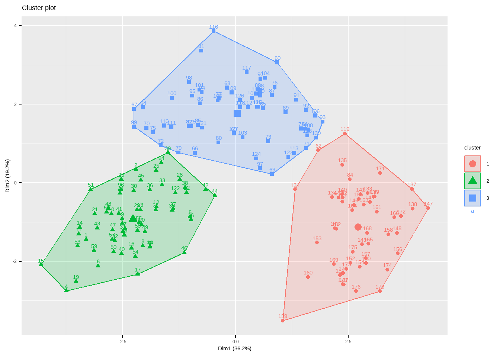

21 R语言聚类分析
主要介绍使用R语言进行层次聚类、划分聚类（K均值聚类和PAM）。
21.1 系统聚类（层次聚类,Hierarchical clustering）
# 没安装flexclust包的需要先安装
data(nutrient, package = "flexclust")
row.names(nutrient) <- tolower(row.names(nutrient))
dim(nutrient) # 27行5列
## [1] 27 5
psych::headTail(nutrient)
## energy protein fat calcium iron
## beef braised 340 20 28 9 2.6
## hamburger 245 21 17 9 2.7
## beef roast 420 15 39 7 2
## beef steak 375 19 32 9 2.6
## ... ... ... ... ... ...
## salmon canned 120 17 5 159 0.7
## sardines canned 180 22 9 367 2.5
## tuna canned 170 25 7 7 1.2
## shrimp canned 110 23 1 98 2.6层次聚类在R语言中非常简单，通过hclust实现。
# 聚类前先进行标准化
nutrient.scaled <- scale(nutrient)
h.clust <- hclust(dist(nutrient.scaled,method = "euclidean"), # 计算距离有不同方法
method = "average" # 层次聚类有不同方法
)下面就是画图，简单点可以直接用plot()。
plot(h.clust,hang = -1,main = "层次聚类", sub="",
xlab="", cex.lab = 1.0, cex.axis = 1.0, cex.main = 2)
关于更加精细化的细节修改，下面会介绍。或者可以借助其他R包快速绘制好看的聚类分析图形。
如何选择聚类的个数呢？
可以通过R包NbClust实现。
library(NbClust)
nc <- NbClust(nutrient.scaled, distance = "euclidean",
min.nc = 2, # 最小聚类数
max.nc = 10, # 最大聚类树
method = "average"
)
## *** : The Hubert index is a graphical method of determining the number of clusters.
## In the plot of Hubert index, we seek a significant knee that corresponds to a
## significant increase of the value of the measure i.e the significant peak in Hubert
## index second differences plot.
## 
## *** : The D index is a graphical method of determining the number of clusters.
## In the plot of D index, we seek a significant knee (the significant peak in Dindex
## second differences plot) that corresponds to a significant increase of the value of
## the measure.
##
## *******************************************************************
## * Among all indices:
## * 5 proposed 2 as the best number of clusters
## * 5 proposed 3 as the best number of clusters
## * 2 proposed 4 as the best number of clusters
## * 4 proposed 5 as the best number of clusters
## * 1 proposed 8 as the best number of clusters
## * 1 proposed 9 as the best number of clusters
## * 5 proposed 10 as the best number of clusters
##
## ***** Conclusion *****
##
## * According to the majority rule, the best number of clusters is 2
##
##
## *******************************************************************输出日志里给出了评判准则以及最终结果：Hubert index和D index使用图形的方式判断最佳聚类个数，拐点明显的可视作最佳聚类个数。
它给出的结论是最佳聚类数是2。我们也可以通过条形图查看这些评判准则的具体数量。
barplot(table(nc$Best.nc[1,]),
xlab = "聚类数目",
ylab = "评判准则个数"
)
从条形图中可以看出，聚类数目为2,3,5,10时，评判准则个数最多，为5个，这里我们可以选择5个。
# 把聚类树划分为5类
cluster <- cutree(h.clust, k=5)
# 查看每一类有多少例
table(cluster)
## cluster
## 1 2 3 4 5
## 7 16 1 2 1把最终结果画出来：
plot(h.clust, hang = -1,main = "",xlab = "")
rect.hclust(h.clust, k=5) # 添加矩形，方便观察
21.2 聚类分析可视化
上面使用默认的plot函数进行聚类树的可视化，下面继续扩展聚类树的可视化。
默认的聚类树可视化函数已经非常好用，有非常多的自定义设置，可以轻松实现好看的聚类树可视化。
op <- par(bg = "grey90")
plot(h.clust, main = "层次聚类", sub="", xlab = "",
col = "#487AA1", col.main = "#45ADA8", col.lab = "#7C8071",
col.axis = "#F38630", lwd = 2, lty = 1, hang = -1, axes = FALSE)
# add axis
axis(side = 2, at = 0:5, col = "#F38630",
labels = FALSE, lwd = 2)
# add text in margin
mtext(0:5, side = 2, at = 0:5,
line = 1, col = "#A38630", las = 2)
par(op)如果对默认的可视化效果不满意，可以先用as.dendrogram()转化一下，再画图可以指定更多细节。
dhc <- as.dendrogram(h.clust)
plot(dhc,type = "triangle") # 比如换个类型
可以提取部分树进行查看，使用cut指定某个高度以上或以下的树进行查看。
op <- par(mfrow = c(2, 1))
# 高度在3以上的树
plot(cut(dhc, h = 3)$upper, main = "Upper tree of cut at h=3")
# 高度在3以下的树
plot(cut(dhc, h = 3)$lower[[2]],
main = "Second branch of lower tree with cut at h=3")
par(op)每一个节点都有不同的属性，比如颜色、形状等，我们可以用函数修改每个节点的属性。
比如修改标签的颜色。
# 按照上面画出来的结果，我们可以分为5类，所以准备好5个颜色
labelColors = c("#CDB380", "#036564", "#EB6841", "#EDC951", "#487AA1")
# 把聚类树分为5个类
clusMember <- cutree(h.clust,k=5)
# 给标签增加不同的颜色
colLab <- function(n) {
if (is.leaf(n)) {
a <- attributes(n)
labCol <- labelColors[clusMember[which(names(clusMember) == a$label)]]
attr(n, "nodePar") <- c(a$nodePar,
list(cex=1.5, # 节点形状大小
pch=20, # 节点形状
col=labCol, # 节点颜色
lab.col=labCol, # 标签颜色
lab.font=2, # 标签字体，粗体斜体粗斜体
lab.cex=1 # 标签大小
)
)
}
n
}
# 把自定义标签颜色应用到聚类树中
diyDendro = dendrapply(dhc, colLab)
# 画图
plot(diyDendro, main = "DIY Dendrogram")
# 加图例
legend("topright",
legend = c("Cluster 1","Cluster 2","Cluster 3","Cluster 4","Cluster 5"),
col = c("#CDB380", "#036564", "#EB6841", "#EDC951", "#487AA1"),
pch = c(20,20,20,20,20), bty = "n", pt.cex = 2, cex = 1 ,
text.col = "black", horiz = FALSE, inset = c(0, 0.1))
如果想要更加精美的聚类分析可视化，可以参考之前的几篇推文：
参考资料：
21.3 快速聚类（划分聚类,partitioning clustering）
21.3.1 K-means聚类
K-means聚类，K均值聚类，是快速聚类的一种。比层次聚类更适合大样本的数据。在R语言中可以通过kmeans()实现K均值聚类。
使用K均值聚类处理178种葡萄酒中13种化学成分的数据集。
data(wine, package = "rattle")
df <- scale(wine[,-1])
psych::headTail(df)
## Alcohol Malic Ash Alcalinity Magnesium Phenols Flavanoids Nonflavanoids
## 1 1.51 -0.56 0.23 -1.17 1.91 0.81 1.03 -0.66
## 2 0.25 -0.5 -0.83 -2.48 0.02 0.57 0.73 -0.82
## 3 0.2 0.02 1.11 -0.27 0.09 0.81 1.21 -0.5
## 4 1.69 -0.35 0.49 -0.81 0.93 2.48 1.46 -0.98
## ... ... ... ... ... ... ... ... ...
## 175 0.49 1.41 0.41 1.05 0.16 -0.79 -1.28 0.55
## 176 0.33 1.74 -0.39 0.15 1.42 -1.13 -1.34 0.55
## 177 0.21 0.23 0.01 0.15 1.42 -1.03 -1.35 1.35
## 178 1.39 1.58 1.36 1.5 -0.26 -0.39 -1.27 1.59
## Proanthocyanins Color Hue Dilution Proline
## 1 1.22 0.25 0.36 1.84 1.01
## 2 -0.54 -0.29 0.4 1.11 0.96
## 3 2.13 0.27 0.32 0.79 1.39
## 4 1.03 1.18 -0.43 1.18 2.33
## ... ... ... ... ... ...
## 175 -0.32 0.97 -1.13 -1.48 0.01
## 176 -0.42 2.22 -1.61 -1.48 0.28
## 177 -0.23 1.83 -1.56 -1.4 0.3
## 178 -0.42 1.79 -1.52 -1.42 -0.59进行K均值聚类时，需要在一开始就指定聚类的个数，我们也可以通过NbClust包实现这个过程。
library(NbClust)
set.seed(123)
nc <- NbClust(df, min.nc = 2, max.nc = 15, method = "kmeans")# 方法选择kmeans
## *** : The Hubert index is a graphical method of determining the number of clusters.
## In the plot of Hubert index, we seek a significant knee that corresponds to a
## significant increase of the value of the measure i.e the significant peak in Hubert
## index second differences plot.
## 
## *** : The D index is a graphical method of determining the number of clusters.
## In the plot of D index, we seek a significant knee (the significant peak in Dindex
## second differences plot) that corresponds to a significant increase of the value of
## the measure.
##
## *******************************************************************
## * Among all indices:
## * 2 proposed 2 as the best number of clusters
## * 19 proposed 3 as the best number of clusters
## * 1 proposed 14 as the best number of clusters
## * 1 proposed 15 as the best number of clusters
##
## ***** Conclusion *****
##
## * According to the majority rule, the best number of clusters is 3
##
##
## *******************************************************************结果中给出了划分依据以及最佳的聚类数目为3个，可以画图查看结果：
table(nc$Best.nc[1,])
##
## 0 1 2 3 14 15
## 2 1 2 19 1 1
barplot(table(nc$Best.nc[1,]),
xlab = "聚类数目",
ylab = "评判准则个数"
)
可以看到聚类数目为3是最佳的选择。
确定最佳聚类个数过程也可以通过非常好用的R包factoextra实现。
library(factoextra)
## Loading required package: ggplot2
## Welcome! Want to learn more? See two factoextra-related books at https://goo.gl/ve3WBa
set.seed(123)
fviz_nbclust(df, kmeans, k.max = 15)
这个结果给出的最佳聚类个数也是3个。
下面进行K均值聚类，聚类数目设为3.
set.seed(123)
fit.km <- kmeans(df, centers = 3, nstart = 25)
fit.km
## K-means clustering with 3 clusters of sizes 51, 62, 65
##
## Cluster means:
## Alcohol Malic Ash Alcalinity Magnesium Phenols
## 1 0.1644436 0.8690954 0.1863726 0.5228924 -0.07526047 -0.97657548
## 2 0.8328826 -0.3029551 0.3636801 -0.6084749 0.57596208 0.88274724
## 3 -0.9234669 -0.3929331 -0.4931257 0.1701220 -0.49032869 -0.07576891
## Flavanoids Nonflavanoids Proanthocyanins Color Hue Dilution
## 1 -1.21182921 0.72402116 -0.77751312 0.9388902 -1.1615122 -1.2887761
## 2 0.97506900 -0.56050853 0.57865427 0.1705823 0.4726504 0.7770551
## 3 0.02075402 -0.03343924 0.05810161 -0.8993770 0.4605046 0.2700025
## Proline
## 1 -0.4059428
## 2 1.1220202
## 3 -0.7517257
##
## Clustering vector:
## [1] 2 2 2 2 2 2 2 2 2 2 2 2 2 2 2 2 2 2 2 2 2 2 2 2 2 2 2 2 2 2 2 2 2 2 2 2 2
## [38] 2 2 2 2 2 2 2 2 2 2 2 2 2 2 2 2 2 2 2 2 2 2 3 3 1 3 3 3 3 3 3 3 3 3 3 3 2
## [75] 3 3 3 3 3 3 3 3 3 1 3 3 3 3 3 3 3 3 3 3 3 2 3 3 3 3 3 3 3 3 3 3 3 3 3 3 3
## [112] 3 3 3 3 3 3 3 1 3 3 2 3 3 3 3 3 3 3 3 1 1 1 1 1 1 1 1 1 1 1 1 1 1 1 1 1 1
## [149] 1 1 1 1 1 1 1 1 1 1 1 1 1 1 1 1 1 1 1 1 1 1 1 1 1 1 1 1 1 1
##
## Within cluster sum of squares by cluster:
## [1] 326.3537 385.6983 558.6971
## (between_SS / total_SS = 44.8 %)
##
## Available components:
##
## [1] "cluster" "centers" "totss" "withinss" "tot.withinss"
## [6] "betweenss" "size" "iter" "ifault"结果很详细，K均值聚类聚为3类，每一类数量分别是51,62,65。然后还给出了聚类中心，每一个观测分别属于哪一个类。
不管是哪一种聚类方法，factoextra配合factomineR都可以给出非常好看的可视化结果。
fviz_cluster(fit.km, data = df)
有非常多的细节可以调整，大家在使用的时候可以自己尝试，和之前推文中介绍的PCA美化一样，也是支持ggplot2语法的。
fviz_cluster(fit.km, data = df,
ellipse = T, # 增加椭圆
ellipse.type = "t", # 椭圆类型
geom = "point", # 只显示点不要文字
palette = "lancet", # 支持超多配色方案
ggtheme = theme_bw() # 支持更换主题
)
21.3.2 围绕中心点的划分PAM
K均值聚类是基于均值的，所以对异常值很敏感。一个更稳健的方法是围绕中心点的划分（PAM）。用一个最有代表性的观测值代表这一类(有点类似于主成分)。K均值聚类一般使用欧几里得距离，而PAM可以使用任意的距离来计算。因此，PAM可以容纳混合数据类型，并且不仅限于连续变量。
我们还是用葡萄酒数据进行演示。PAM聚类可以通过cluster包中的pam()实现。
library(cluster)
set.seed(123)
fit.pam <- pam(wine[-1,], k=3 # 聚为3类
, stand = T # 聚类前进行标准化
)
fit.pam
## Medoids:
## ID Type Alcohol Malic Ash Alcalinity Magnesium Phenols Flavanoids
## 36 35 1 13.48 1.81 2.41 20.5 100 2.70 2.98
## 107 106 2 12.25 1.73 2.12 19.0 80 1.65 2.03
## 149 148 3 13.32 3.24 2.38 21.5 92 1.93 0.76
## Nonflavanoids Proanthocyanins Color Hue Dilution Proline
## 36 0.26 1.86 5.10 1.04 3.47 920
## 107 0.37 1.63 3.40 1.00 3.17 510
## 149 0.45 1.25 8.42 0.55 1.62 650
## Clustering vector:
## 2 3 4 5 6 7 8 9 10 11 12 13 14 15 16 17 18 19 20 21
## 1 1 1 1 1 1 1 1 1 1 1 1 1 1 1 1 1 1 1 1
## 22 23 24 25 26 27 28 29 30 31 32 33 34 35 36 37 38 39 40 41
## 1 1 1 1 1 1 1 1 1 1 1 1 1 1 1 1 1 1 1 1
## 42 43 44 45 46 47 48 49 50 51 52 53 54 55 56 57 58 59 60 61
## 1 1 1 1 1 1 1 1 1 1 1 1 1 1 1 1 1 1 2 2
## 62 63 64 65 66 67 68 69 70 71 72 73 74 75 76 77 78 79 80 81
## 2 2 1 2 1 2 2 2 1 2 1 2 1 1 2 2 2 2 1 2
## 82 83 84 85 86 87 88 89 90 91 92 93 94 95 96 97 98 99 100 101
## 2 2 3 2 2 2 2 2 2 2 2 2 2 2 1 1 2 1 2 2
## 102 103 104 105 106 107 108 109 110 111 112 113 114 115 116 117 118 119 120 121
## 2 2 2 2 2 2 2 2 1 2 2 2 2 2 2 2 2 2 2 2
## 122 123 124 125 126 127 128 129 130 131 132 133 134 135 136 137 138 139 140 141
## 1 2 2 2 2 2 2 2 2 3 3 3 3 3 3 3 3 3 3 3
## 142 143 144 145 146 147 148 149 150 151 152 153 154 155 156 157 158 159 160 161
## 3 3 3 3 3 3 3 3 3 3 3 3 3 3 3 3 3 3 3 3
## 162 163 164 165 166 167 168 169 170 171 172 173 174 175 176 177 178
## 3 3 3 3 3 3 3 3 3 3 3 3 3 3 3 3 3
## Objective function:
## build swap
## 3.537365 3.504175
##
## Available components:
## [1] "medoids" "id.med" "clustering" "objective" "isolation"
## [6] "clusinfo" "silinfo" "diss" "call" "data"Medoids给出了中心点，用第35个观测代表第1类，第107个观测代表第2类，第149个观测代表第3类。Clustering vector给出了每一个观测分别属于哪一个类。结果可以画出来：
clusplot(fit.pam, main = "PAM cluster")
同样也可以用factoextra包实现可视化。
fviz_cluster(fit.pam,
ellipse = T, # 增加椭圆
ellipse.type = "t", # 椭圆类型
geom = "point", # 只显示点不要文字
palette = "aaas", # 支持超多配色方案
ggtheme = theme_bw() # 支持更换主题
)
以后会给大家带来factoextra和factomineR包的详细介绍。